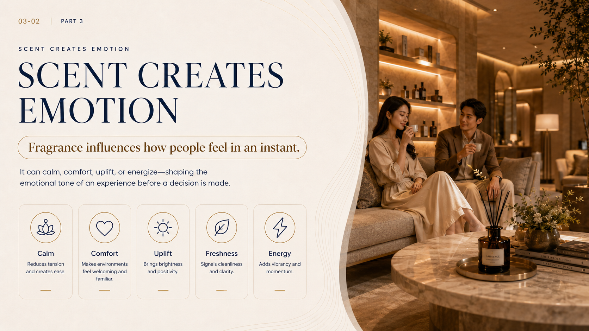
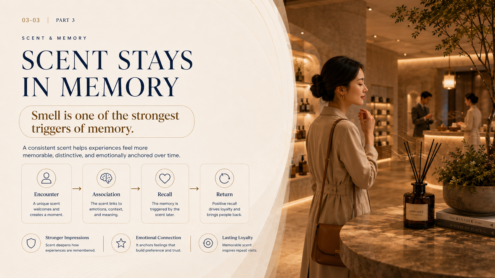
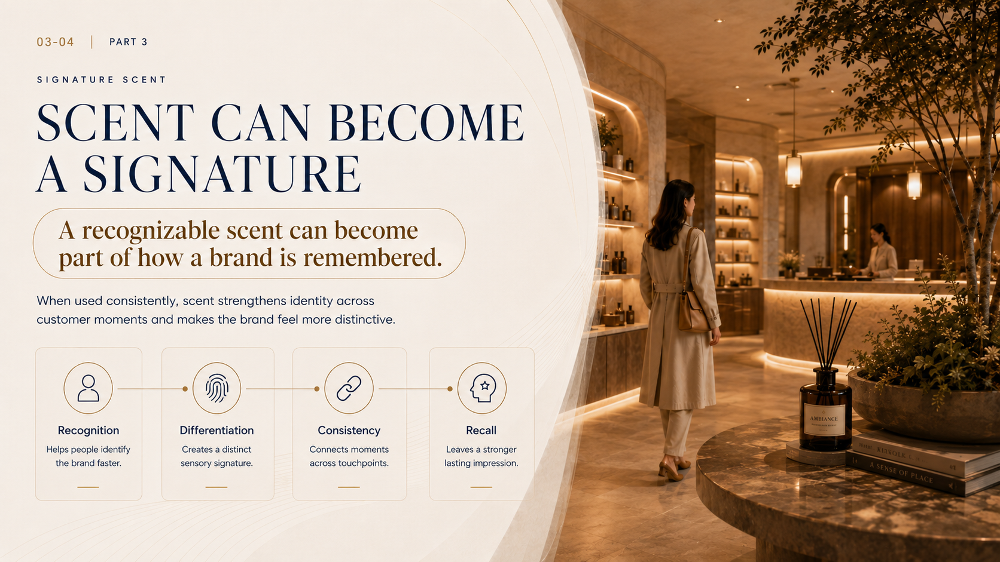
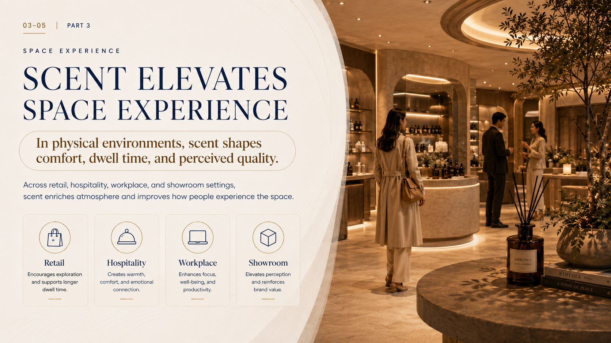
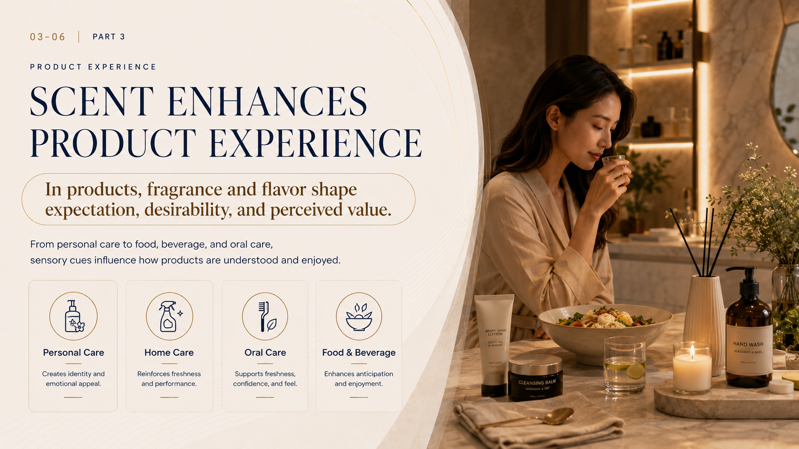
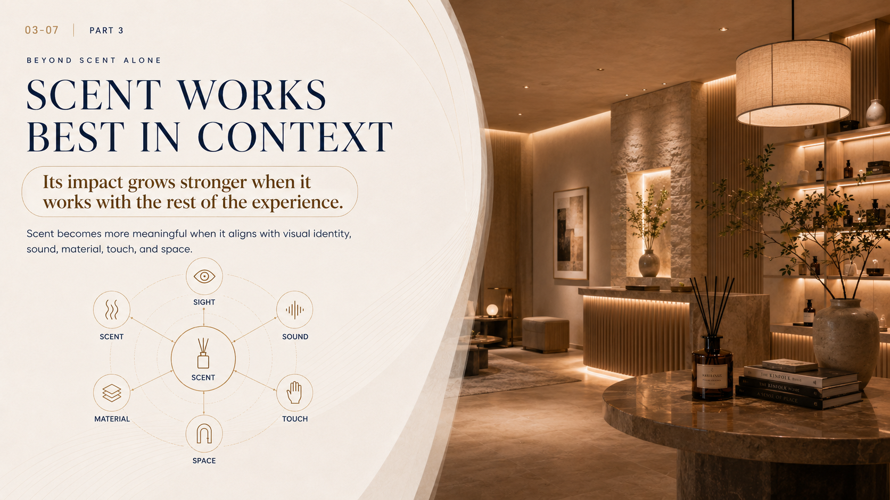
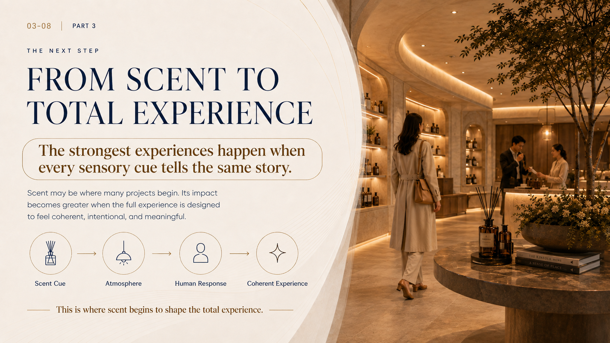

Calm
Reduces tension and creates ease.
Scent shapes atmosphere
Fragrance influences how people feel in an instant.
It can calm, comfort, uplift, or energize, shaping the emotional tone of an experience before a decision is made.

Reduces tension and creates ease.
Makes environments feel welcoming and familiar.
Brings brightness and positivity.
Signals cleanliness and clarity.
Adds vibrancy and momentum.

Scent & memory
Smell is one of the strongest triggers of memory.
A consistent scent helps experiences feel more memorable, distinctive, and emotionally anchored over time.
A unique scent welcomes and creates a moment.
The scent links to emotions, context, and meaning.
The memory is triggered by the scent later.
Positive recall drives loyalty and brings people back.
Scent deepens how experiences are remembered.
It anchors feelings that build preference and trust.
Memorable scent inspires repeat visits.
Signature scent
A recognizable scent can become part of how a brand is remembered.
When used consistently, scent strengthens identity across customer moments and makes the brand feel more distinctive.

Helps people identify the brand faster.
Creates a distinct sensory signature.
Connects moments across touchpoints.
Leaves a stronger lasting impression.

Space experience
In physical environments, scent shapes comfort, dwell time, and perceived quality.
Across retail, hospitality, workplace, and showroom settings, scent enriches atmosphere and improves how people experience the space.
Encourages exploration and supports longer dwell time.
Creates warmth, comfort, and emotional connection.
Enhances focus, well-being, and productivity.
Elevates perception and reinforces brand value.
Product experience
In products, fragrance and flavor shape expectation, desirability, and perceived value.
From personal care to food, beverage, and oral care, sensory cues influence how products are understood and enjoyed.

Creates identity and emotional appeal.
Reinforces freshness and performance.
Supports freshness, confidence, and feel.
Enhances anticipation and enjoyment.

Beyond scent alone
Its impact grows stronger when it works with the rest of the experience.
Scent becomes more meaningful when it aligns with visual identity, sound, material, touch, and space.
The next step
The strongest experiences happen when every sensory cue tells the same story.
Scent may be where many projects begin. Its impact becomes greater when the full experience is designed to feel coherent, intentional, and meaningful.
